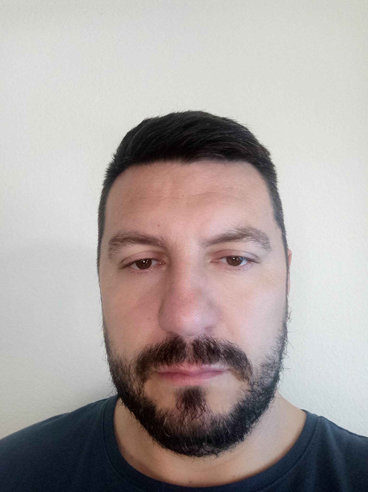
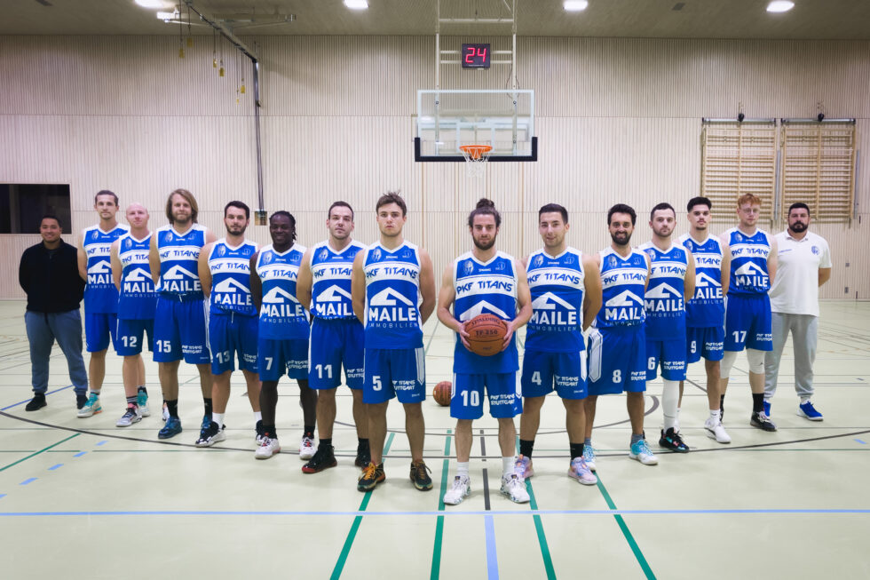
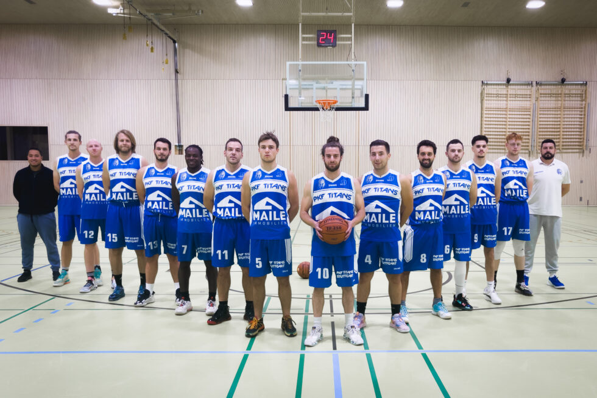

Coach Marko Zloh
Coach Marko Zloh CV
Professional basketball Coach
 Marko Zloh
Resume CV
Education
1998-2001 Secondary Economy trade and Mechanic School,Kucevo (High School)
2004-2008 Basketball Academy Belgrade (Academy) Serbian Basketball Association
Coaching Carrer
2007-2008 Basketball Club Kucevo- (Head Coach)
2008-2009 Basketball Club Jasenica- ( Assistant Coach)
2009-2010 Basketball Club Surcin- (Assistant Coach)
2010-2014 Basketball Club Jakovo- (Assistant Coach)
2014-2017 Basketball Club Stara Pazova- (Assistant Coach)
2017-2018 Basketball Club Depiro- (Head Coach) First Division Malta
 2018-2019 Basketball Club Depiro- Head Coach U14 Girls Academy
Runners up U14
2019-2020 Basketball Club Depiro- Head Coach Second Division & Head Coach U14(Malta)
2020-2021 Basketball Club PKF Titans Stutgart Regionalliga (assistant coach H1) (Germany)
2018-2019 Basketball Club Depiro- Head Coach U14 Girls Academy
Runners up U14
2019-2020 Basketball Club Depiro- Head Coach Second Division & Head Coach U14(Malta)
2020-2021 Basketball Club PKF Titans Stutgart Regionalliga (assistant coach H1) (Germany)
 2021-2022 Basketball Club PKF Titans Stutgart Landesliga Head Coach (Germany)

2021-2022 Basketball Club PKF Titans Stutgart Landesliga Head Coach (Germany)

Coaching/Sport experience by Date
2000-2004 Many basketball tournaments as player all around Serbia in 3 vs 3 senior competition.
2007-2008 Head Basketball Coach- Basketball Club Kucevo organized various tournaments in women and man categories in the region.
2008-2009 Head Basketball Coach- Basketball Club Jasenica with junior team and Assistant Coach Of cadet team in a quality league in the region of Central Serbia
2010-2014 Assistant Coach at Basketball klub Jakovo of senior team where club has progress from 3 rd to second division in which one we finished at place N3.
2014-2017 Assistant Coach in first Division for women senior team in Club Stara Pazova where I was helping team with tactics and movement on the floor, also was part of organization of conditional trainings.
2017-2018 Head Coach Man Senior Team in First Division Club Depiro (Country Malta) in which one we reach semifinals in Playoffs.
Head Coach Women Senior Team Club Depiro (Malta) with which one we were Runner ups in Finals of Cup. Under 23 Women team League Runners up.
2018-2019 Head Coach U14 Depiro Basketball Club Academy (Girls) League Runners up (Malta)
Runners up U14
2019-2020 Head Coach Second Division Depiro Basketball Club / Head Coach U14 Depiro Basketball Club Academy (Girls)
2021-2022 Assistant Coach in PKF Titans Stutgart Regionliga 2
2022-2023 Head Coach in PKF Titans Landesliga
Leadership
- Was a member of the board Basketball Club Kucevo (Serbia) also the head coach of the men and women categories in the junior and cadet teams.
- Was member of Coaching commision in Depiro Basketball Club
- Was part of Camp organization in Stutgart Titans Basketball Club
Duties
⦁ Coached shooting, dribbling and passing of basketball.
⦁ Trained in the areas of run, jump, turn and switching man-to-man defenses.
⦁ Prepared scouting reports for games and assisted the head coach throughout games.
⦁ Organized a season timetable and scouted other teams for tactical aims.
⦁ Specialist in the lecture of physical education that is necessary for the proper development of the children of their psychophysical abilities
Personal characteristics :
Hardworking , persistent with a great sense of organization